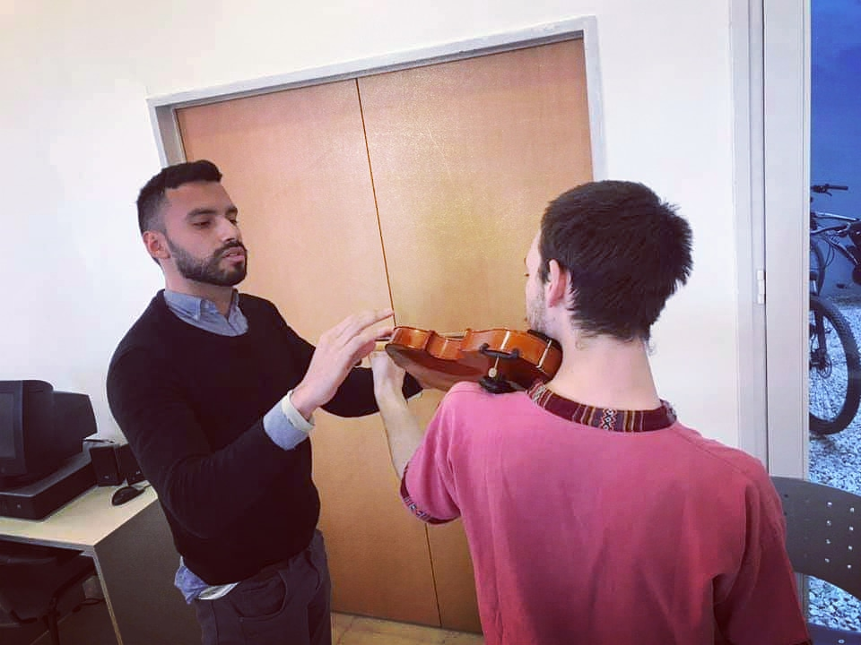

Propuestas
CLASES ONLINE
Para brindarte clases que se ajusten a tus objetivos, elaboro planificaciones que potenciadas con la utilización de aplicaciones como jitsi, presentaciones de google...

PRESENCIALES
En estos momentos no estoy brindando clases presenciales, pero suelen ser a domicilio o en mi estudio, no necesitas traer tu violin...

PRESENTACIONES
Realizo presentaciones a pedido, grabadas o en vivo, para esa persona, que debido a la realidad actual no puedes ver...